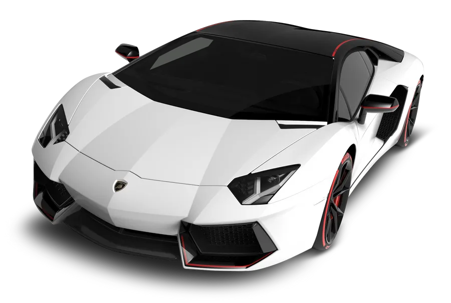
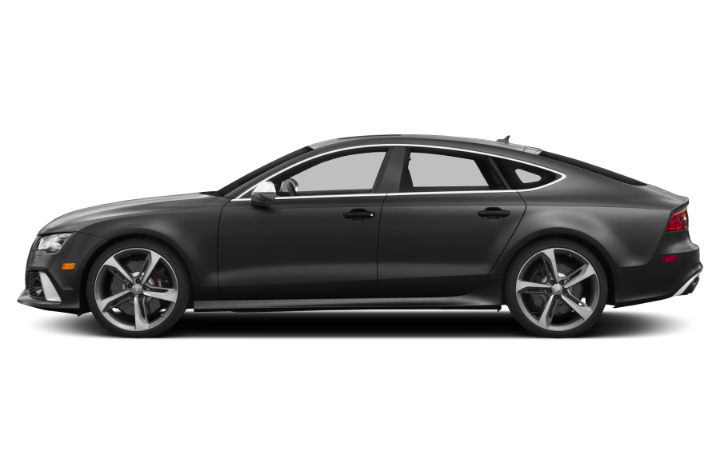
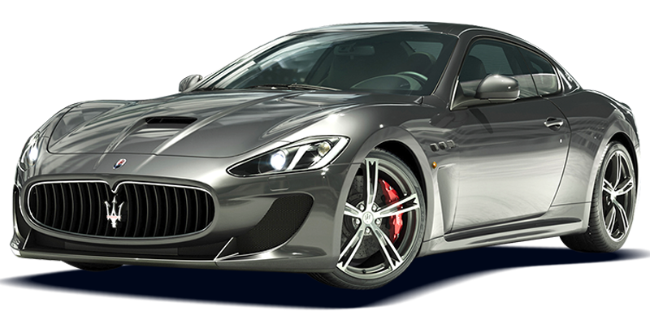
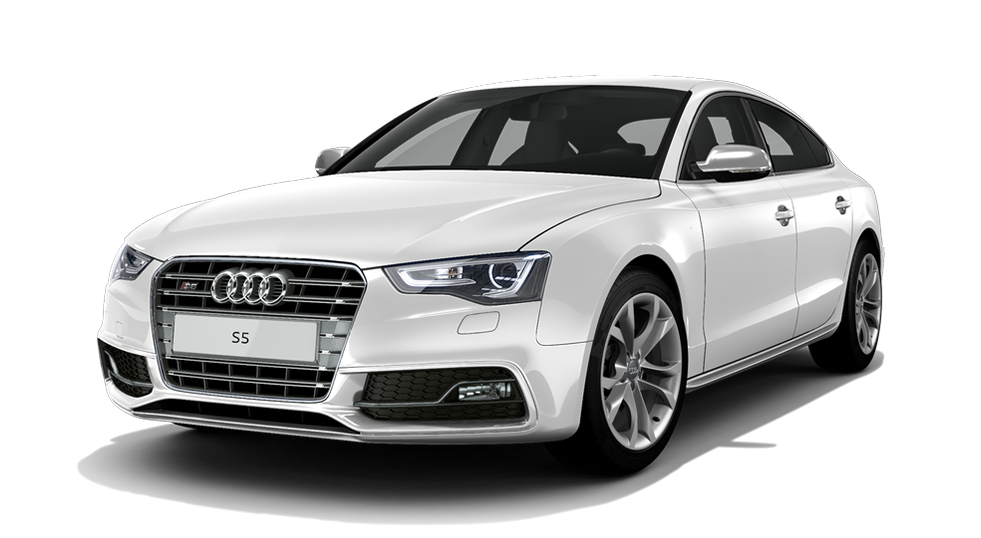
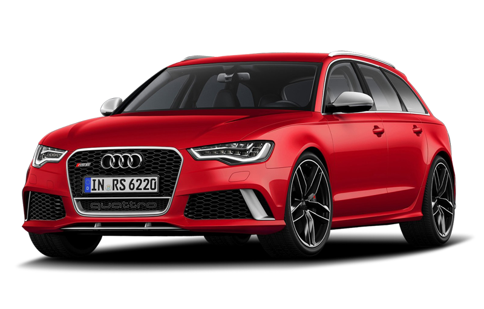
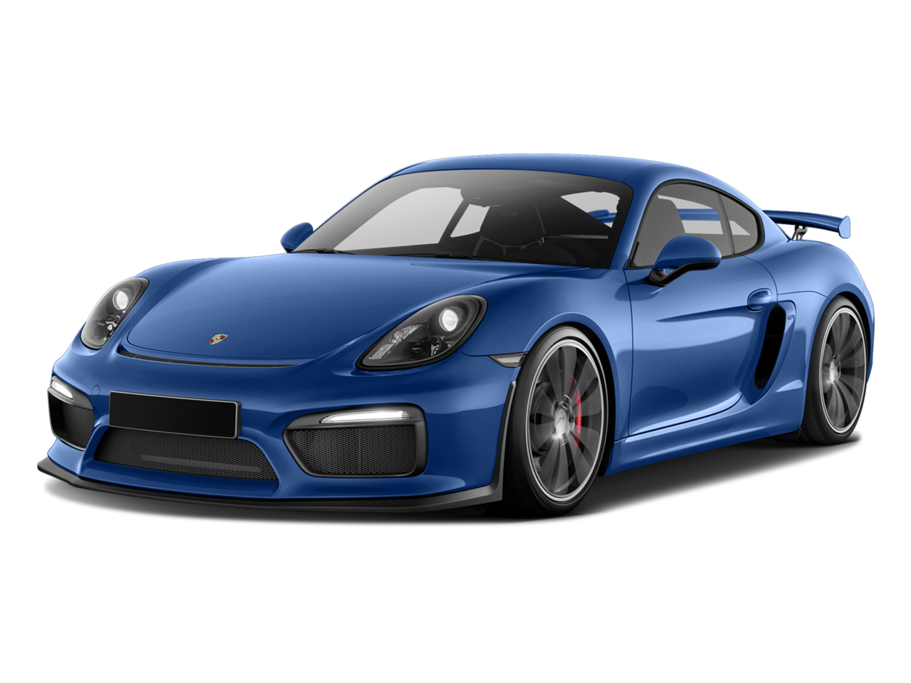
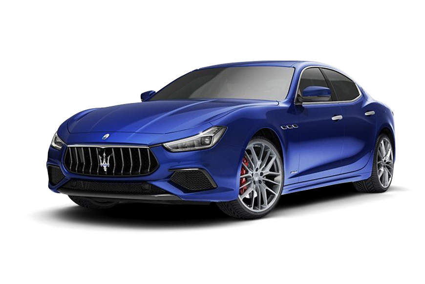
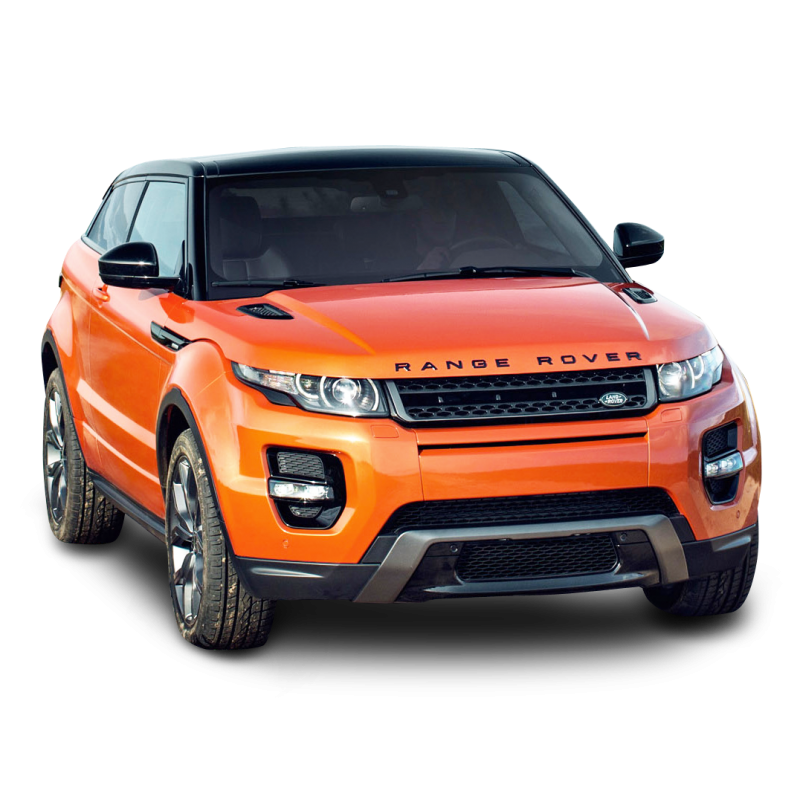

Mire se erdhet tek Makinat Luksoze
Ketu do i gjeni disa makina luksoze qe i ofron AutoSalloni jone.Shpresojme te ju pelqejne.
AMG GT

Mercedes AMG GT është një ikonë e elegancës dhe fuqisë. Me një dizajn aerodinamik që përfaqëson përsosmërinë, kjo makinë ofron një motor V8 Bi-Turbo që kombinon performancën ekstreme me komfortin e udhëtimit.
Brendësia është një përzierje e lëkurës më të mirë dhe teknologjisë më të avancuar, duke përfshirë ekranet dixhitale, sediljet me masazh dhe ndriçimin ambiental që krijon një atmosferë të ngrohtë dhe moderne.
Është sinonim i luksit dhe stilit të jetesës elitare.Viti i prodhimit 2029
Qmimi per AMG GT: 170.000 $
Brendësia është një përzierje e lëkurës më të mirë dhe teknologjisë më të avancuar, duke përfshirë ekranet dixhitale, sediljet me masazh dhe ndriçimin ambiental që krijon një atmosferë të ngrohtë dhe moderne.
Është sinonim i luksit dhe stilit të jetesës elitare.Viti i prodhimit 2029
Qmimi per AMG GT: 170.000 $
Mercedes CLA

Mercedes CLA është një kupe luksoze që ofron një dizajn të rafinuar dhe teknologji moderne. Kabina është e veshur me materiale premium, duke përfshirë lëkurë të butë dhe alumin të përpunuar,
ndërsa sistemi MBUX me kontroll zanor e bën çdo udhëtim të lehtë dhe të këndshëm. E pajisur me motorra efikasë dhe opsione hibride,
CLA kombinon luksin dhe prakticitetin për një përvojë të përditshme të pashembullt.Viti i prodhimit:2020
Qmimi per Mercedes CLA: 76.000$
ndërsa sistemi MBUX me kontroll zanor e bën çdo udhëtim të lehtë dhe të këndshëm. E pajisur me motorra efikasë dhe opsione hibride,
CLA kombinon luksin dhe prakticitetin për një përvojë të përditshme të pashembullt.Viti i prodhimit:2020
Qmimi per Mercedes CLA: 76.000$
Bugatti Veyron

Bugatti Veyron nuk është vetëm një makinë hiper-sportive, por edhe një simbol i luksit absolut dhe artit inxhinierik. Përveç fuqisë dhe shpejtësisë marramendëse,
Veyron përmban detaje unike si ora analoge nga Parmigiani Fleurier e vendosur në kabinë, e cila mund të hiqet dhe përdoret si një aksesor i dorës.
Materialet e brendshme janë të përzgjedhura me kujdes, duke përfshirë lëkurën më të mirë nga rajone të veçanta të Evropës. Çdo Veyron është e personalizuar sipas dëshirës së pronarit, me ngjyra unike dhe opsione dekorative që e bëjnë secilën makinë një vepër arti.
Qmimi: 5.000.000$
Veyron përmban detaje unike si ora analoge nga Parmigiani Fleurier e vendosur në kabinë, e cila mund të hiqet dhe përdoret si një aksesor i dorës.
Materialet e brendshme janë të përzgjedhura me kujdes, duke përfshirë lëkurën më të mirë nga rajone të veçanta të Evropës. Çdo Veyron është e personalizuar sipas dëshirës së pronarit, me ngjyra unike dhe opsione dekorative që e bëjnë secilën makinë një vepër arti.
Qmimi: 5.000.000$
Lamborghini Hurracan Coupe

Interieri i Lamborghini Huracán është i dizajnuar që të ofrojë një përvojë premium. Përveç materialeve luksoze si lëkura Alcantara, teknologjia është në qendër të vëmendjes.
Ekranet digjitale janë të përshtatura për të ofruar të gjitha të dhënat e makinës në një mënyrë të qartë dhe intuitive. Pronari mund të personalizojë çdo aspekt të makinës,
duke përfshirë stitching-in e lëkurës dhe detajet e karbonit në kabinë. Një sistem audio Sensonum është opsional për ata që duan cilësi të jashtëzakonshme të zërit.
Qmimi:1.900.000$
Ekranet digjitale janë të përshtatura për të ofruar të gjitha të dhënat e makinës në një mënyrë të qartë dhe intuitive. Pronari mund të personalizojë çdo aspekt të makinës,
duke përfshirë stitching-in e lëkurës dhe detajet e karbonit në kabinë. Një sistem audio Sensonum është opsional për ata që duan cilësi të jashtëzakonshme të zërit.
Qmimi:1.900.000$
Lamborghini Aventador Blue

Lamborghini Aventador
Aventador është një simbol i fuqisë dhe luksit ekstrem. Interieri përmban një kombinim unik të lëkurës dhe materialeve të avancuara teknologjikisht.
Sistemi i kontrollit të klimës, opsionet e personalizuara për ngjyrat dhe stitching, dhe ndjesia futuristike e kabinës e bëjnë atë një eksperiencë të rrallë.
Një opsion veçanërisht luksoz është programi Ad Personam, ku klientët mund të krijojnë një Aventador unike.
Qmimi:1.400.000$
Sistemi i kontrollit të klimës, opsionet e personalizuara për ngjyrat dhe stitching, dhe ndjesia futuristike e kabinës e bëjnë atë një eksperiencë të rrallë.
Një opsion veçanërisht luksoz është programi Ad Personam, ku klientët mund të krijojnë një Aventador unike.
Qmimi:1.400.000$
BMW M7

BMW M7 është simboli i fuqisë së pakompromis dhe luksit absolut. Motori TwinPower Turbo V8 i jep kësaj veture performancë të jashtëzakonshme, ndërsa brendësia është një përzierje e teknologjisë dhe artit.
Sediljet e lëkurës Merino, me qepje artizanale dhe detaje të fibrës së karbonit, krijojnë një atmosferë unike.
Sistemi i audios Bowers & Wilkins e bën përvojën akoma më të mirë, duke ofruar luks në çdo detaj.Viti i prodhimit 2020
Qmimi per BMW M7: 49.000$
Sediljet e lëkurës Merino, me qepje artizanale dhe detaje të fibrës së karbonit, krijojnë një atmosferë unike.
Sistemi i audios Bowers & Wilkins e bën përvojën akoma më të mirë, duke ofruar luks në çdo detaj.Viti i prodhimit 2020
Qmimi per BMW M7: 49.000$
Audi RS7

Audi RS7 përfaqëson një kombinim të luksit modern dhe performancës ekstreme. Me linjat e saj të fuqishme dhe detajet sportive, kjo veturë është një kryevepër estetike.
Kabina është e pajisur me ekranet OLED, sedilje të veshura me lëkurë Nappa, dhe ndriçim ambiental të personalizueshëm. Sistemi Quattro siguron kontroll të shkëlqyer, ndërsa motori V8 Bi-Turbo ofron përshpejtim marramendës.
Është një veturë që të jep luks dhe adrenalinë njëkohësisht.Viti i prodhimit:2023
Qmimi per Audi RS7:170.000$
Kabina është e pajisur me ekranet OLED, sedilje të veshura me lëkurë Nappa, dhe ndriçim ambiental të personalizueshëm. Sistemi Quattro siguron kontroll të shkëlqyer, ndërsa motori V8 Bi-Turbo ofron përshpejtim marramendës.
Është një veturë që të jep luks dhe adrenalinë njëkohësisht.Viti i prodhimit:2023
Qmimi per Audi RS7:170.000$
Bentley

Bentley Continental GT është sinonimi i luksit absolut. Me një dizajn elegant dhe të fuqishëm, kjo makinë është ndërtuar me materiale më të mira si dru i punuar me dorë dhe lëkurë premium.
Brendësia është e pajisur me sedilje të ngrohura dhe ventiluar, një sistem audio Naim që ofron përvojë akustike unike dhe një konsol qendror të personalizueshëm.
Performanca vjen nga motori V12, duke e bërë këtë veturë një kombinim perfekt të luksit dhe fuqisë.Viti i prodhimit:2020
Qmimi per Bentley:300.000$
Brendësia është e pajisur me sedilje të ngrohura dhe ventiluar, një sistem audio Naim që ofron përvojë akustike unike dhe një konsol qendror të personalizueshëm.
Performanca vjen nga motori V12, duke e bërë këtë veturë një kombinim perfekt të luksit dhe fuqisë.Viti i prodhimit:2020
Qmimi per Bentley:300.000$
Tesla

Tesla Model S Plaid përfaqëson luksin e së ardhmes me një performancë elektrike të paarritshme. Brendësia e saj minimaliste përfshin një ekran të madh qendror me teknologjinë më të fundit, sedilje të rehatshme me lëkurë vegane dhe një sistem audio të avancuar.
Përshpejtimi i saj 0-100 km/h në më pak se 2 sekonda dhe autonomia mbi 600 km e bëjnë këtë veturë një zgjedhje luksoze dhe ekologjike për të ardhmen.Viti i prodhimit:2021
Qmimi per Tesla:100.000$
Përshpejtimi i saj 0-100 km/h në më pak se 2 sekonda dhe autonomia mbi 600 km e bëjnë këtë veturë një zgjedhje luksoze dhe ekologjike për të ardhmen.Viti i prodhimit:2021
Qmimi per Tesla:100.000$
AUDI RSQ8

Audi RS Q8 është një SUV luksoz që ofron performancë dhe komoditet. Kabina është një hapësirë e rafinuar me lëkurë Valcona, qepje artizanale,
dhe teknologji cutting-edge si ekrani MMI Touch Response dhe sistemin e audios Bang & Olufsen.
Motori V8 Bi-Turbo dhe sistemi Quattro sigurojnë një përvojë të shkëlqyer drejtimi, ndërsa dizajni agresiv dhe elegant e bën këtë SUV të dallueshëm. Viti i prodhimit:2018
Qmimi per Audi RSQ8:250.000$
dhe teknologji cutting-edge si ekrani MMI Touch Response dhe sistemin e audios Bang & Olufsen.
Motori V8 Bi-Turbo dhe sistemi Quattro sigurojnë një përvojë të shkëlqyer drejtimi, ndërsa dizajni agresiv dhe elegant e bën këtë SUV të dallueshëm. Viti i prodhimit:2018
Qmimi per Audi RSQ8:250.000$
Masserati

Maserati Levante Trofeo është një përfaqësues perfekt i elegancës italiane dhe performancës sportive. Kabina është e pajisur me lëkurë Pieno Fiore, detaje të fibrës së karbonit dhe një sistem audio Harman Kardon.
Motori V8 Twin-Turbo i zhvilluar nga Ferrari e bën këtë SUV një fuqi të pakontestueshme në rrugë.
Teknologjia moderne dhe ndjesia e luksit të përpunuar e bëjnë Levante Trofeo një ikonë në botën e SUV-ve luksoze.Viti i prodhimit:2018
Qmimi per Masserati:176.000$
Motori V8 Twin-Turbo i zhvilluar nga Ferrari e bën këtë SUV një fuqi të pakontestueshme në rrugë.
Teknologjia moderne dhe ndjesia e luksit të përpunuar e bëjnë Levante Trofeo një ikonë në botën e SUV-ve luksoze.Viti i prodhimit:2018
Qmimi per Masserati:176.000$
Audi A5

Audi A5 përfaqëson një makinë coupe elegante dhe praktike, e cila shquhet për interierin e saj të qetë dhe të sofistikuar.
Materialet e përdorura, si lëkura e butë dhe alumini i pastër, krijojnë një ambient relaksues.
Teknologjia përfshin një ekran të madh të ndjeshëm ndaj prekjeve, drita ambientale dhe opsione të avancuara për sistemin audio Bang & Olufsen.
Qmimi:19.000$
Materialet e përdorura, si lëkura e butë dhe alumini i pastër, krijojnë një ambient relaksues.
Teknologjia përfshin një ekran të madh të ndjeshëm ndaj prekjeve, drita ambientale dhe opsione të avancuara për sistemin audio Bang & Olufsen.
Qmimi:19.000$
BMW 5

BMW M5 kombinon fuqinë ekstreme me luksin. Sediljet janë të mbështjella me lëkurë Merino, me ngrohje, ajrim dhe masazh.
Kabina është e pajisur me një ekran të madh për infotainment, një sistem audio premium Harman Kardon ose Bowers & Wilkins, dhe ndriçim ambiental.
Cilësia e përpunimit të brendshëm është në nivel të lartë, ndërsa teknologjia e përparuar siguron rehati dhe luks në çdo udhëtim.
Qmimi:100.000$
Kabina është e pajisur me një ekran të madh për infotainment, një sistem audio premium Harman Kardon ose Bowers & Wilkins, dhe ndriçim ambiental.
Cilësia e përpunimit të brendshëm është në nivel të lartë, ndërsa teknologjia e përparuar siguron rehati dhe luks në çdo udhëtim.
Qmimi:100.000$
BMW 3

BMW M3 ofron një përvojë të rafinuar sportive dhe luksoze. Interieri përmban lëkurë të klasit të lartë dhe elemente të karbonit.
Teknologjia përfshin një sistem infotainment me ekran të madh, ndriçim të personalizuar dhe një sistem audio me cilësi të lartë.
Hapësira e kabinës është e menduar për të ofruar rehati për shoferin dhe pasagjerët, edhe në udhëtime të gjata.
Qmimi:33.000$
Teknologjia përfshin një sistem infotainment me ekran të madh, ndriçim të personalizuar dhe një sistem audio me cilësi të lartë.
Hapësira e kabinës është e menduar për të ofruar rehati për shoferin dhe pasagjerët, edhe në udhëtime të gjata.
Qmimi:33.000$
Porsche Cayenne

Porsche Cayenne është SUV-i që kombinon performancën me luksin. Kabina është e mbështjellë me lëkurë të nivelit të lartë,
dhe përfshin elemente si ekranet digjitale, dritat ambientale, dhe sistemet e ventilimit të sediljeve. Sistemi audio Bose ose Burmester e bën përvojën e udhëtimit më të këndshme.
Hapësira e gjerë dhe materialet cilësore e vendosin Cayenne në majën e luksit për një SUV.
Qmimi:50.000$
dhe përfshin elemente si ekranet digjitale, dritat ambientale, dhe sistemet e ventilimit të sediljeve. Sistemi audio Bose ose Burmester e bën përvojën e udhëtimit më të këndshme.
Hapësira e gjerë dhe materialet cilësore e vendosin Cayenne në majën e luksit për një SUV.
Qmimi:50.000$
Mercedes E class

E-Class është një makinë që kombinon luksin e përpunuar me funksionalitetin e përditshëm. Kabina përmban sedilje të mbështjella me lëkurë premium dhe detaje alumini ose druri.
Ndriçimi ambiental dhe një sistem infotainment MBUX me dy ekrane të mëdha e bëjnë përvojën e udhëtimit të avancuar dhe moderne.
Për pasagjerët e pasmë, hapësira është e bollshme, ndërsa opsionet si masazhi dhe ventilimi për sediljet ofrojnë rehati luksoze. Sistemi audio Burmester, funksionet e parkimit të asistuar, dhe sistemi i përparuar i filtrimit të ajrit e rrisin ndjeshëm cilësinë e përvojës në kabinë.
Qmimi:70.000$
Ndriçimi ambiental dhe një sistem infotainment MBUX me dy ekrane të mëdha e bëjnë përvojën e udhëtimit të avancuar dhe moderne.
Për pasagjerët e pasmë, hapësira është e bollshme, ndërsa opsionet si masazhi dhe ventilimi për sediljet ofrojnë rehati luksoze. Sistemi audio Burmester, funksionet e parkimit të asistuar, dhe sistemi i përparuar i filtrimit të ajrit e rrisin ndjeshëm cilësinë e përvojës në kabinë.
Qmimi:70.000$
Audi RS6

RS6 Avant është një përzierje perfekte mes performancës dhe luksit. Kabina përfshin një ndërthurje lëkure premium Valcona dhe Alcantara, ekranet e mëdha për informacionin e shoferit dhe pasagjerëve,
dhe një sistem audio Bang & Olufsen 3D. Hapësira e madhe dhe komoditeti i sediljeve e bëjnë atë një makinë të përsosur për familje luksoze.
Qmimi:100.000$
dhe një sistem audio Bang & Olufsen 3D. Hapësira e madhe dhe komoditeti i sediljeve e bëjnë atë një makinë të përsosur për familje luksoze.
Qmimi:100.000$
Lamborghini Urus
Urus është SUV-i i parë i Lamborghini-t dhe një shembull i luksit ekstrem në këtë kategori.
Kabina është e pajisur me një ndërthurje të lëkurës Alcantara dhe karbonit, një sistem infotainment të dyfishtë, dhe opsione për masazh në sedilje.
Me një program personalizimi të gjerë, çdo Urus mund të bëhet unik sipas dëshirave të klientit.
Qmimi:300.000$
Kabina është e pajisur me një ndërthurje të lëkurës Alcantara dhe karbonit, një sistem infotainment të dyfishtë, dhe opsione për masazh në sedilje.
Me një program personalizimi të gjerë, çdo Urus mund të bëhet unik sipas dëshirave të klientit.
Qmimi:300.000$
Tesla Model X

Tesla Model X kombinon luksin me teknologjinë e avancuar. Dyert "Falcon Wing" janë një shfaqje e sofistikimit inxhinierik dhe ofrojnë një akses të veçantë në kabinë.
Brendësia përmban lëkurë ekologjike dhe një dizajn minimaliste që përqendrohet në funksionalitet dhe rehati. Ekrani qendror 17 inç kontrollon të gjitha aspektet e makinës, nga klima te argëtimi.
Një sistem i avancuar i filtrimit të ajrit "Bioweapon Defense Mode" siguron pastërtinë e ajrit brenda kabinës. Model X është gjithashtu një makinë miqësore për familjet luksoze, me hapësirë të mjaftueshme dhe ndihmës për drejtimin plotësisht elektrik
Qmimi:100.000$
Brendësia përmban lëkurë ekologjike dhe një dizajn minimaliste që përqendrohet në funksionalitet dhe rehati. Ekrani qendror 17 inç kontrollon të gjitha aspektet e makinës, nga klima te argëtimi.
Një sistem i avancuar i filtrimit të ajrit "Bioweapon Defense Mode" siguron pastërtinë e ajrit brenda kabinës. Model X është gjithashtu një makinë miqësore për familjet luksoze, me hapësirë të mjaftueshme dhe ndihmës për drejtimin plotësisht elektrik
Qmimi:100.000$
Tesla Model Y

Tesla Model Y është një SUV kompakt me një dizajn minimalist dhe të sofistikuar.
Kabina përfshin lëkurë ekologjike, një ekran të madh qendror për të kontrolluar të gjitha funksionet, dhe një hapësirë të bollshme për udhëtarët.
Teknologjia e përparuar e autopilotit e bën atë të dallohet në luksin e tij teknologjik.
Qmimi:700.000$
Kabina përfshin lëkurë ekologjike, një ekran të madh qendror për të kontrolluar të gjitha funksionet, dhe një hapësirë të bollshme për udhëtarët.
Teknologjia e përparuar e autopilotit e bën atë të dallohet në luksin e tij teknologjik.
Qmimi:700.000$
Tesla Model S

Maserati Levante Trofeo është një përfaqësues perfekt i elegancës italiane dhe performancës sportive. Kabina është e pajisur me lëkurë Pieno Fiore, detaje të fibrës së karbonit dhe një sistem audio Harman Kardon.
Motori V8 Twin-Turbo i zhvilluar nga Ferrari e bën këtë SUV një fuqi të pakontestueshme në rrugë.
Teknologjia moderne dhe ndjesia e luksit të përpunuar e bëjnë Levante Trofeo një ikonë në botën e SUV-ve luksoze.Viti i prodhimit:2018
Qmimi per Masserati:89.000$
Motori V8 Twin-Turbo i zhvilluar nga Ferrari e bën këtë SUV një fuqi të pakontestueshme në rrugë.
Teknologjia moderne dhe ndjesia e luksit të përpunuar e bëjnë Levante Trofeo një ikonë në botën e SUV-ve luksoze.Viti i prodhimit:2018
Qmimi per Masserati:89.000$
BMW X6

BMW X6
BMW X6 shquhet për luksin modern dhe detajet teknologjike. Kabina është projektuar për rehati maksimale, me sedilje ergonomike që përfshijnë funksione ngrohjeje, ventilimi dhe masazhi.
Sistemi i ndriçimit ambiental ka një gamë të gjerë ngjyrash që krijojnë një atmosferë të personalizuar për udhëtimin tuaj. Një opsion unik është sistemi Sky Lounge, që përdor një ndriçim LED në kulmin panoramik për të krijuar një efekt të ngjashëm me qiellin me yje.
Materialet përfshijnë lëkurë Merino dhe drurë të rrallë, ndërsa teknologjia përfshin parkim të asistuar dhe një sistem drejtimi gjysmë-autonom.
Qmimi:27.000$
Sistemi i ndriçimit ambiental ka një gamë të gjerë ngjyrash që krijojnë një atmosferë të personalizuar për udhëtimin tuaj. Një opsion unik është sistemi Sky Lounge, që përdor një ndriçim LED në kulmin panoramik për të krijuar një efekt të ngjashëm me qiellin me yje.
Materialet përfshijnë lëkurë Merino dhe drurë të rrallë, ndërsa teknologjia përfshin parkim të asistuar dhe një sistem drejtimi gjysmë-autonom.
Qmimi:27.000$
Masserati Quattroporte

Maserati Levante Trofeo është një përfaqësues perfekt i elegancës italiane dhe performancës sportive. Kabina është e pajisur me lëkurë Pieno Fiore, detaje të fibrës së karbonit dhe një sistem audio Harman Kardon.
Motori V8 Twin-Turbo i zhvilluar nga Ferrari e bën këtë SUV një fuqi të pakontestueshme në rrugë.
Teknologjia moderne dhe ndjesia e luksit të përpunuar e bëjnë Levante Trofeo një ikonë në botën e SUV-ve luksoze.Viti i prodhimit:2018
Qmimi per Masserati:176.000$
Motori V8 Twin-Turbo i zhvilluar nga Ferrari e bën këtë SUV një fuqi të pakontestueshme në rrugë.
Teknologjia moderne dhe ndjesia e luksit të përpunuar e bëjnë Levante Trofeo një ikonë në botën e SUV-ve luksoze.Viti i prodhimit:2018
Qmimi per Masserati:176.000$
Mercedes S-Class

S-Class është sinonim i luksit absolut në industrinë e makinave. Kabina është një përzierje e artizanatit të lartë dhe teknologjisë moderne.
Sediljet ofrojnë funksione masazhi, ngrohjeje, dhe ajrimi, ndërsa janë të mbuluara me lëkurë Nappa ose lëkurë ekskluzive Designo. Panelet e drurit të përpunuar me dorë dhe ndriçimi ambiental me 64 ngjyra krijojnë një atmosferë të qetë dhe elegante.
Teknologjia përfshin një sistem infotainment MBUX me dy ekrane të mëdha OLED, një sistem audio Burmester 4D, dhe funksione të përparuara për drejtimin autonom. Hapësira e pasme është e pajisur me ekrane argëtimi dhe opsione për tavolina pune,
duke e bërë S-Class të përshtatshme për biznes dhe luks familjar.
Qmimi:120.000$
Sediljet ofrojnë funksione masazhi, ngrohjeje, dhe ajrimi, ndërsa janë të mbuluara me lëkurë Nappa ose lëkurë ekskluzive Designo. Panelet e drurit të përpunuar me dorë dhe ndriçimi ambiental me 64 ngjyra krijojnë një atmosferë të qetë dhe elegante.
Teknologjia përfshin një sistem infotainment MBUX me dy ekrane të mëdha OLED, një sistem audio Burmester 4D, dhe funksione të përparuara për drejtimin autonom. Hapësira e pasme është e pajisur me ekrane argëtimi dhe opsione për tavolina pune,
duke e bërë S-Class të përshtatshme për biznes dhe luks familjar.
Qmimi:120.000$
Porsche Cayman

Porsche Cayman përfaqëson një makinë sportive të balancuar, ku luksi dhe performanca bashkëjetojnë në harmoni. Kabina përfshin materialet më cilësore, si lëkura premium dhe panele alumini, duke dhënë një ndjesi ekskluzive.
Sediljet janë ergonomike dhe të personalizueshme për rehati maksimale, ndërsa hapësira e brendshme është e fokusuar në shoferin.
Teknologjia përfshin një sistem infotainment të avancuar Porsche Communication Management (PCM) me navigim, Apple CarPlay dhe një sistem audio premium Bose ose Burmester.
Dritat ambientale të personalizueshme dhe elementet opsionale si panele me dru ose karbon e ngrejnë nivelin e luksit.
Qmimi:70.000$
Sediljet janë ergonomike dhe të personalizueshme për rehati maksimale, ndërsa hapësira e brendshme është e fokusuar në shoferin.
Teknologjia përfshin një sistem infotainment të avancuar Porsche Communication Management (PCM) me navigim, Apple CarPlay dhe një sistem audio premium Bose ose Burmester.
Dritat ambientale të personalizueshme dhe elementet opsionale si panele me dru ose karbon e ngrejnë nivelin e luksit.
Qmimi:70.000$
Masserati Gran Turismo

Maserati GranTurismo
Maserati GranTurismo përfaqëson elegancën italiane me një përzierje të performancës dhe luksit. Kabina është një shembull i përpunimit artizanal, ku çdo detaj është i punuar me dorë. Lëkura Poltrona Frau dhe druri i lëmuar ofrojnë një ndjesi të veçantë cilësie.
Një sistem argëtimi me ekran me prekje, një sistem audio Harman Kardon ose Bowers & Wilkins, dhe funksionalitete të avancuara si navigimi satelitor e bëjnë këtë makinë një zgjidhje të përsosur për ata që kërkojnë luks dhe stil.
Maserati ofron gjithashtu programe personalizimi, ku pronarët mund të zgjedhin çdo detaj të kabinës, duke përfshirë ngjyrat dhe materialet.
Qmimi:180.000$
Një sistem argëtimi me ekran me prekje, një sistem audio Harman Kardon ose Bowers & Wilkins, dhe funksionalitete të avancuara si navigimi satelitor e bëjnë këtë makinë një zgjidhje të përsosur për ata që kërkojnë luks dhe stil.
Maserati ofron gjithashtu programe personalizimi, ku pronarët mund të zgjedhin çdo detaj të kabinës, duke përfshirë ngjyrat dhe materialet.
Qmimi:180.000$
Masserati GranTurismo

Maserati Gran Turismo është një përfaqësues perfekt i elegancës italiane dhe performancës sportive. Kabina është e pajisur me lëkurë Pieno Fiore, detaje të fibrës së karbonit dhe një sistem audio Harman Kardon.
Motori V8 Twin-Turbo i zhvilluar nga Ferrari e bën këtë SUV një fuqi të pakontestueshme në rrugë.
Teknologjia moderne dhe ndjesia e luksit të përpunuar e bëjnë Levante Trofeo një ikonë në botën e SUV-ve luksoze.Viti i prodhimit:2018
Qmimi per Masserati:180.000$
Motori V8 Twin-Turbo i zhvilluar nga Ferrari e bën këtë SUV një fuqi të pakontestueshme në rrugë.
Teknologjia moderne dhe ndjesia e luksit të përpunuar e bëjnë Levante Trofeo një ikonë në botën e SUV-ve luksoze.Viti i prodhimit:2018
Qmimi per Masserati:180.000$
Range Rover Evoque

Range Rover është një linjë luksoze SUV-sh nga prodhuesi britanik Land Rover, pjesë e Jaguar Land Rover.
Kjo seri dallohet për dizajnin elegant, performancën e fuqishme dhe aftësitë e shkëlqyera për terrene të vështira.
Me materiale të cilësisë së lartë dhe teknologji moderne, Range Rover kombinon komoditetin dhe luksin me funksionalitetin praktik. Kjo e bën atë një zgjedhje të preferuar si për udhëtime urbane ashtu edhe për eksplorime jashtë rruge.
Qmimi:26.000$
Kjo seri dallohet për dizajnin elegant, performancën e fuqishme dhe aftësitë e shkëlqyera për terrene të vështira.
Me materiale të cilësisë së lartë dhe teknologji moderne, Range Rover kombinon komoditetin dhe luksin me funksionalitetin praktik. Kjo e bën atë një zgjedhje të preferuar si për udhëtime urbane ashtu edhe për eksplorime jashtë rruge.
Qmimi:26.000$